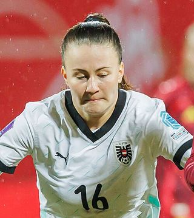

Ezzcoins › Player pages › Annabel Schasching

75
CM

Schasching
PAC76
SHO65
PAS74
DRI72
DEF70
PHY70
Annabel Schasching
75 CM · RB Leipzig · Google Pixel Frauen-Bundesliga ·  Austria
Austria
1,600Recent console price
77Meta rating · CDM +2 vs overall
CDM77CM76CAM72
PAC76
SHO65
PAS74
DRI72
DEF70
PHY70
Chemistry style
Turn on JavaScript to see this card with each chemistry style.
- Position
- CM (also CDM, CAM)
- Club
- RB Leipzig
- League
- Google Pixel Frauen-Bundesliga
- Nation
- Austria
- Skill moves
- 2★
- Weak foot
- 3★
- Preferred foot
- Right
- Height
- 163 cm
- Age
- 24
- Football
- Women's football
Meta rating: Ezzcoins' own estimate of how well this card plays in game, worked out from its stats for each position it can play, its skill moves, weak foot and PlayStyle+. An average card scores about its overall rating; higher means it plays above its rating.
Watch on EzzcoinsAnnabel Schasching's special cards
More from RB Leipzig
- 83
 David RaumLB
David RaumLB - 83
 Willi OrbánCB
Willi OrbánCB - 82Christoph BaumgartnerCAM
- 81
 Castello LukebaCB
Castello LukebaCB - 81Nicolas SeiwaldCDM
- 80Christopher NkunkuST
- 79Ridle BakuRB
- 78
 Antonio NusaLW
Antonio NusaLW